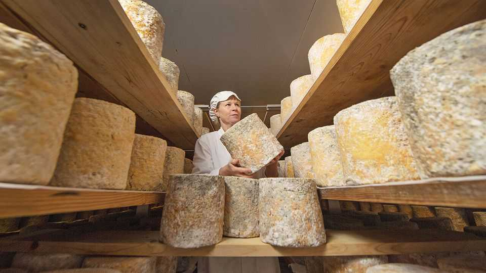

Britain has more cheeses than France. The whey ahead may be harder
Greater freedom to innovate has helped bring about an artisan revival

Aug 13th 2026
THE BLUE-MOULD crisis struck the Nettlebed Creamery days before Christmas in 2019. When Diane Honey came into the storeroom, the peachy rinds of the Highmoor cheeses were speckled with grey. Penicillium commune was greedily consuming the whole production at the busiest time of year. Though harmless to eat, they could no longer be sold. “It wasn’t aesthetically pleasing,” says Ms Honey. The cheeses went to a food bank.
Such are the trials of the artisans bringing British cheesemaking back from the brink. “We don’t have an institute of cheese, as in France, to learn our craft,” says Rose Grimond, the Nettlebed Creamery’s founder (who once worked for The Economist). “So we make our own mistakes—often expensive ones.”
For centuries British farmhouses turned leftover milk into nutritious, non-perishable cheese. Each era left its mould. The Romans used dry cheeses as soldier-food. Monks perfected delicate washed-rind varieties. And generations of farmers honed styles such as buttery Lancashires and crumbly Wensleydales.
But wartime milk-rationing consolidated a lot of local production, and wiped out the ecosystem of specialist schools. Over the two world wars, the number of farmhouse cheesemakers dropped from roughly 3,500 to around 100. Industrialisation whittled that down to just 62 in the late 1970s, according to Patrick Rance’s “The Great British Cheese Book”, published in 1982. When artisans began reviving old recipes in the 1980s, they were, in effect, reinventing the wheel.
They have done so with gusto. An extra impetus came with the abolition of the Milk Marketing Board in 1994. That ended guaranteed prices for milk and gave dairy farmers an incentive to find higher-value uses for surplus output.
Matthew O’Callaghan, who organises the Artisan Cheese Fair, Britain’s largest, reckons that the number of British cheese varieties has risen to around 1,400—well over double the total in France, by some counts—and more than 300 cheesemakers. “You could have a different British cheese from a different cheesemaker every day of the year,” he says.
As more consumers want cheeses with a clear provenance, often linked with a nice craft story and better farming practices, sales of speciality brands have been outgrowing the general market, according to IMARC, a research firm. The reputation of British cheeses is rising. At last year’s World Cheese Awards, three of 14 finalists were British: two Red Leicesters and an ash-coated soft goat’s cheese.
It helps that, with fewer cheeses subject to Protected Designation of Origin (PDO) laws, and less pressure than in France to produce particular varieties in certain regions, British cheesemakers have more freedom to innovate. Sparkenhoe Farm’s Red Leicester is made according to a recipe from the 1700s. In Somerset, Feltham’s Farm makes “Renegade Monk” by mashing up blue cultures with a distinctly British ale-washed rind. In Suffolk, Fen Farm Dairy ladles curds by hand to make a Brie-like cheese called Baron Bigod, using an ancient method that is now becoming less common even in France.
Joe Schneider, an American cheesemaker, moved to Nottinghamshire to make “Stichelton”. The blue cheese resembles a Stilton but uses raw milk—prohibited for “Stiltons” under the European Union’s PDO laws, which still apply in Britain—to avoid losing the distinct flavours of his farm to pasteurisation. He says that what drew him to British cheeses was their “relationship with where it was coming from, who was the person behind it”. “The affineurs in France don’t want you to know where they get their cheese,” he says.
The next chapter may be harder. Producers are now in a difficult spot, says Bronwen Percival, a buyer at Neal’s Yard Dairy, a cheese shop that championed the revival. Raw-material and energy costs have risen. And the emergence of new pathogens has “put fear into raw-milk cheesemakers”, of whom there are fewer now than a decade ago, she says.
Some cheesemakers hope to take a slice of foreign markets. Exports of British cheese (both artisan and mass-made) rose from £818m in 2023 to £971m ($1.3bn) in 2025, an increase of 12% in real terms. Western Europeans, who are used to paying a premium for good cheese, have long been the best buyers (Neal’s Yard sold more Stilton to France than in Britain before Brexit), but Canada and China have been buying more. Cheddar has long been the foreign favourite, accounting for 60% of export value; fresher cheeses, which are more delicate and have a shorter sell-by date, lend themselves less to shipping.
At home, more British customers might be encouraged to buy cheese as a treat. Younger people seem to have a growing taste for it. The Real Cheese Project, a lobby group, finds that 35% of consumers aged 25 to 34 buy artisan cheese once a week, compared with 17% in the general population.
Cheese tourism seems to be a growing part of the marketing mix. For serious foodies Cheese Journeys, a travel company based in America, offers a week-long “British Cheese Odyssey” from $6,200 (£4,600). Back in Nettlebed on a summer Sunday, families tuck into cheese toasties in a converted barn called The Cheese Shed. The farm shop draws lunching cyclists and horse riders in the Chilterns. Visitors peer into the glass-walled creamery. “It’s like a cheese-zoo enclosure,” says Ms Grimond cheerfully. ■